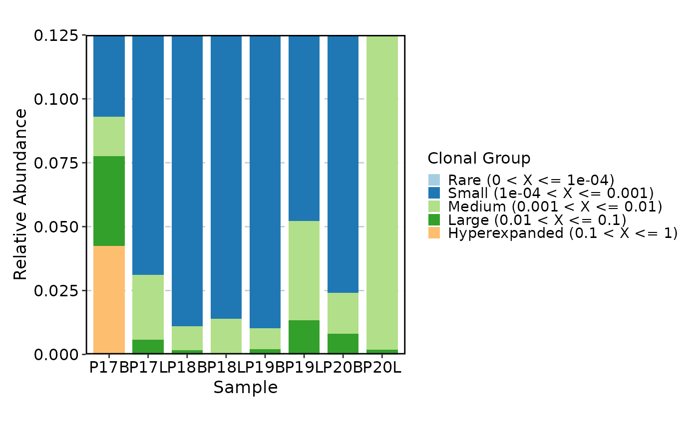
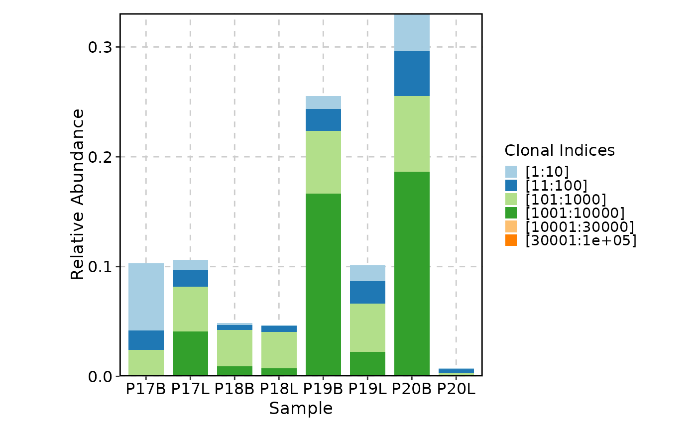
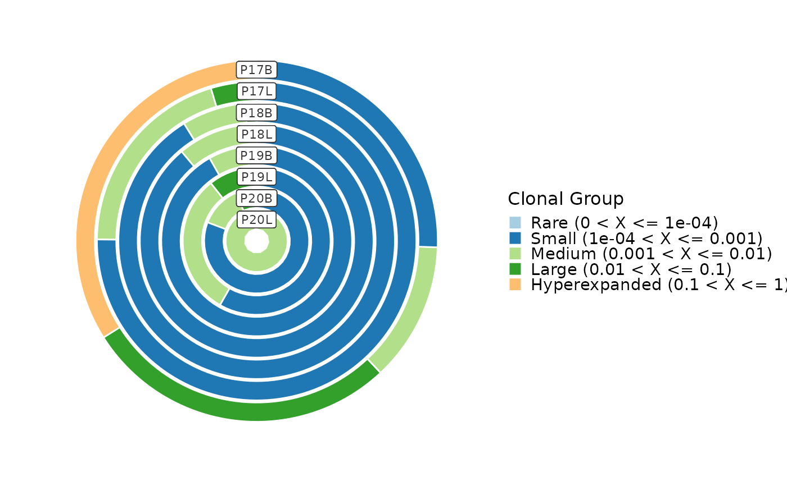
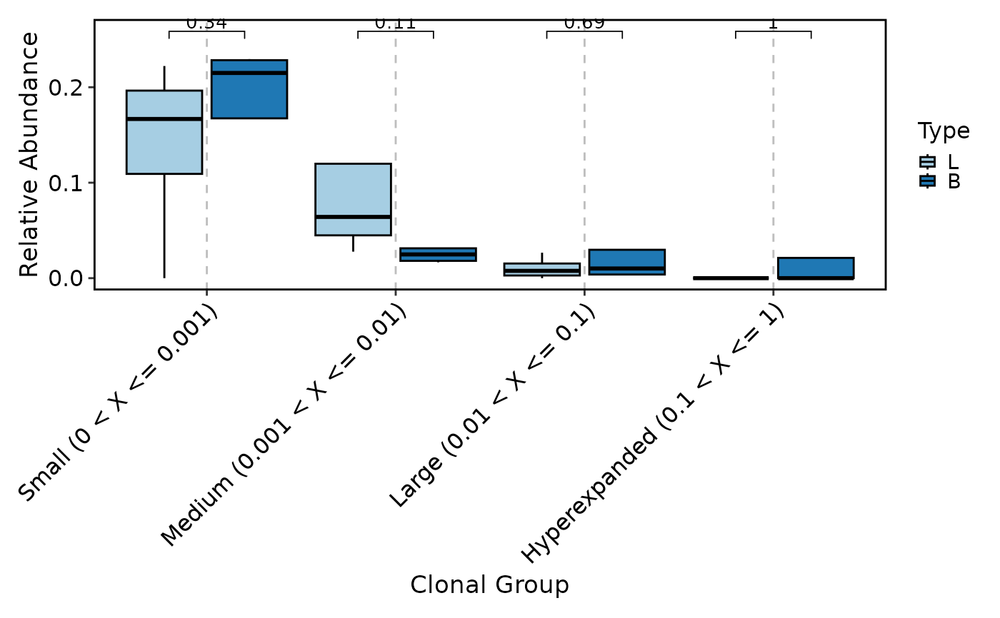
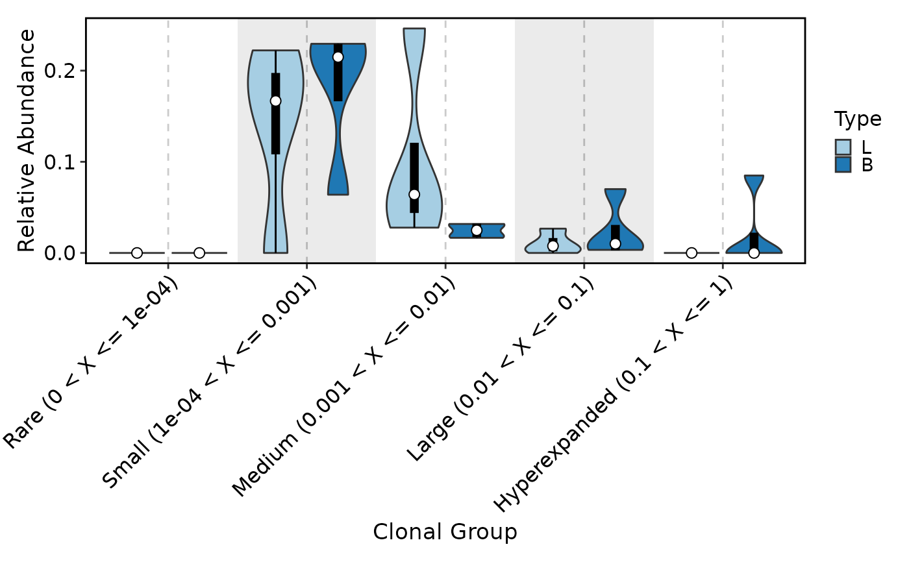
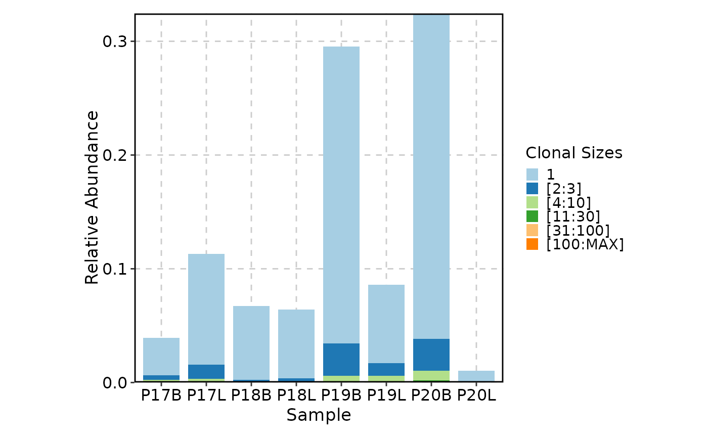

Visualizes the composition of the immune repertoire by categorizing clones into abundance groups (Rare, Small, Medium, Large, Hyperexpanded) and plotting their relative proportions across samples or metadata groups. This reveals the overall structure of the repertoire — whether it is dominated by a few large clones (clonal expansion) or composed of many small clones (high diversity).
ClonalCompositionPlot supports three analysis methods:
Homeostasis (
"homeostasis","homeo","rel") — Clones are binned by their frequency (fraction of the total repertoire) into categories such as Rare, Small, Medium, Large, and Hyperexpanded. UsesscRepertoire::clonalHomeostasis().Top clones (
"top") — Clones are ranked and binned by their rank index (e.g., top 10, top 100, etc.). UsesscRepertoire::clonalProportion().Rare clones (
"rare") — Clones are binned by their absolute size (clone count). Uses clone size thresholds directly.
Arguments
- data
The product of
scRepertoire::combineTCR(),scRepertoire::combineBCR(), orscRepertoire::combineExpression().- clone_call
How to define a clone. One of
"gene","nt","aa"(default),"strict", or a custom variable name in the data.- chain
Which chain(s) to use:
"both"(default),"TRA","TRB","TRD","TRG","IGH", or"IGL".- method
The clonal categorization method. One of:
"homeostasis"(default),"homeo","rel"— Frequency-based binning usingclone_splitas abundance thresholds."top"— Rank-based binning usingclone_splitas rank cutoffs."rare"— Size-based binning usingclone_splitas clone size thresholds.
- clone_split
Threshold values defining the clonal categories. Default is
NULL, which picks sensible defaults per method:For
"homeostasis"/"homeo"/"rel"— a named list of frequency thresholds:list(Rare = 1e-04, Small = 0.001, Medium = 0.01, Large = 0.1, Hyperexpanded = 1)For
"top"— rank cutoffs:c(10, 100, 1000, 10000, 30000, 100000)For
"rare"— clone size thresholds:c(1, 3, 10, 30, 100)
- scale
How to normalize the values. One of:
TRUE(default) — Values within each x-axis group sum to 1 (group-wise proportion).FALSE— Raw values (clone counts) are used."sample"or"Sample"— Values within each sample sum to 1 (sample-wise proportion).
- facet_by
Metadata column used to facet the plot into separate panels. Default is
NULL.- group_by
Metadata column used to group (color) the data. Default is
NULL. Required for"box"and"violin"plot types.- split_by
Metadata column used to split the data into separate plots. Default is
NULL.- xlab
X-axis label. Default is
NULL, which uses thegroup_bycolumn name or"Sample".- ylab
Y-axis label. Default is
NULL, which auto-generates"Abundance"or"Relative Abundance"depending onscale.- plot_type
The visualization type. One of:
"bar"(default) — Stacked bar chart of clonal categories across groups. Best for comparing composition across categories."ring"— Ring (donut) chart alternative to stacked bars."box"— Box plot showing the distribution of each clonal category's abundance across samples. Requiresgroup_by."violin"— Violin plot alternative to box plot. Requiresgroup_by.
- order
A named list controlling the order of factor levels. List names are column names; list values are the desired order. Default is
NULL.- ...
Additional arguments passed to the underlying plotthis function:
"bar"—plotthis::BarPlot()(palette,position,alpha, ...)"ring"—plotthis::RingPlot()(palette,alpha, ...)"box"—plotthis::BoxPlot()(comparisons,add_bg,palette, ...)"violin"—plotthis::ViolinPlot()(add_box,add_bg,comparisons,palette, ...)
Note
group_by for box/violin: The group_by parameter is required when
plot_type is "box" or "violin". These plot types show per-sample
distributions, with group_by determining the coloring.
Bar/ring aggregation: When group_by is specified for bar or ring
plots, data is aggregated across samples within each group (Sample
values are summed) before plotting, to show group-level composition.
Examples
# \donttest{
set.seed(8525)
data(contig_list, package = "scRepertoire")
data <- scRepertoire::combineTCR(contig_list,
samples = c("P17B", "P17L", "P18B", "P18L", "P19B","P19L", "P20B", "P20L"))
data <- scRepertoire::addVariable(data,
variable.name = "Type",
variables = factor(rep(c("B", "L"), 4), levels = c("L", "B"))
)
data <- scRepertoire::addVariable(data,
variable.name = "Subject",
variables = rep(c("P17", "P18", "P19", "P20"), each = 2)
)
ClonalCompositionPlot(data)

ClonalCompositionPlot(data, method = "top")

ClonalCompositionPlot(data, plot_type = "ring")

ClonalCompositionPlot(data, group_by = "Type", plot_type = "box", comparison = TRUE,
clone_split = list(Small = 0.001, Medium = 0.01, Large = 0.1, Hyperexpanded = 1))
#> Warning: [Box/Violin/BeeswarmPlot] Some pairwise comparisons may fail due to insufficient data points or variability. Adjusting data to ensure valid comparisons.

ClonalCompositionPlot(data, group_by = "Type", plot_type = "violin", add_box = TRUE,
add_bg = TRUE)

ClonalCompositionPlot(data, method = "rare")

# }